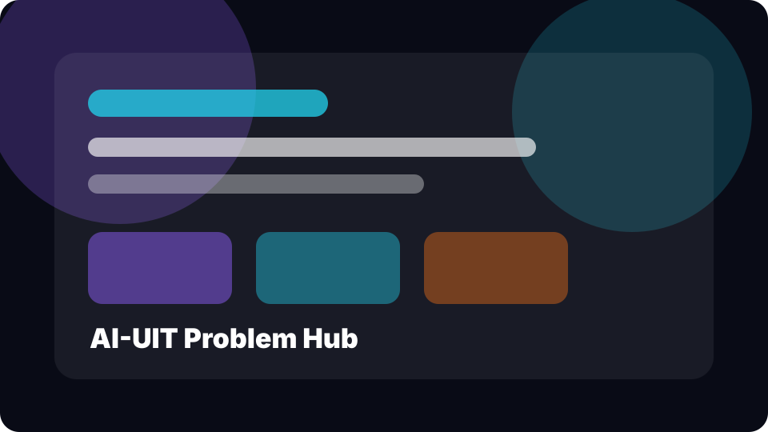
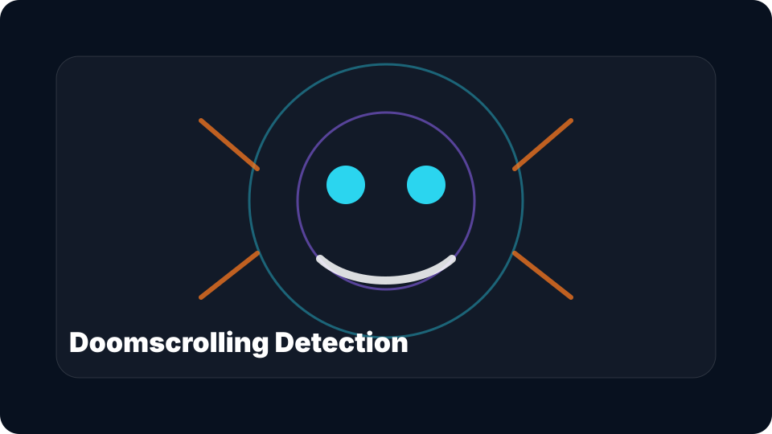
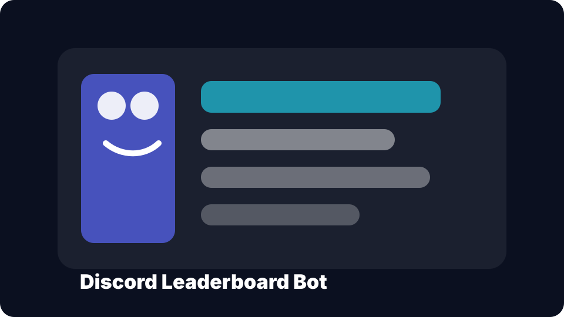
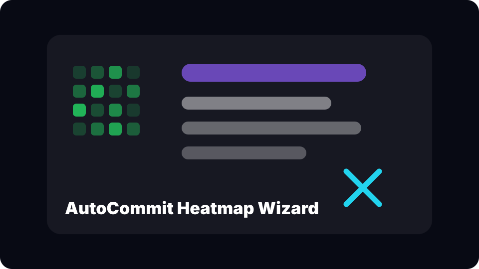
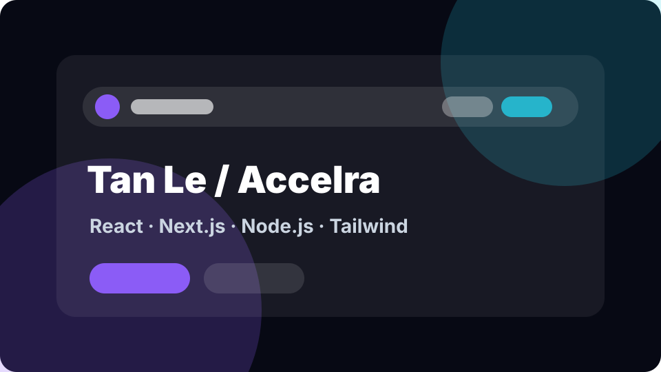

Computer Science @ UIT · Open to AI/Data internships
I’m Accelra
I build AI systems that feel fast, useful, and human.
AI Engineer
I work across machine learning, data pipelines, MLOps, web engineering, and competitive programming — turning experiments into portfolio-ready products.
React.js
Next.js
Node.js
Tailwind CSS
Python
Machine Learning
SQL
Docker
React.js
Next.js
Node.js
Tailwind CSS
Python
Machine Learning
SQL
Docker
About
Builder mindset, AI direction, engineering discipline.
I’m a Computer Science student at UIT who enjoys learning by rebuilding real systems: AI demos, data workflows, automation tools, backend logic, and clean portfolio interfaces.
My strongest direction is AI/Data Science, but I keep a full-stack toolkit so I can ship projects end-to-end: model, backend, UI, deployment, and documentation.
AI Engineer
Data Scientist
MLOps Learner
Competitive Programmer
GitHub Builder
Product-minded Dev
Skills
Focused stack, colorful enough to remember.
Filter by area. Some tools belong to more than one category because real projects do not stay in neat boxes.
Projects
Projects that tells my story.
Realistic project cards aligned with AI/Data, UIT, GitHub, and competitive programming.

AI-UIT Problem Hub
FeaturedA curated repository for UIT AI problems, solutions, experiments, and learning notes — built to become a long-term academic portfolio asset.
PythonMarkdownAlgorithmsAI

Doomscrolling Detection
Computer VisionFace mesh, eye tracking, and interaction signals using OpenCV + MediaPipe to detect fatigue-like patterns and trigger playful interventions.
OpenCVMediaPipePythonCV

Discord Leaderboard Bot
BackendA Discord.py bot that stores points, ranks members, and maintains a leaderboard with SQLite — small, practical, and community-ready.
PythonDiscord.pySQLiteBot

AutoCommit Heatmap Wizard
AutomationA Windows-friendly automation tool with human-like commit rhythms, cooldown logic, logs, and GitHub contribution analytics.
PythonGitSchedulerLogs

Accelra Portfolio
WebThis portfolio itself: a clean static site inspired by React/Next/Tailwind design language, ready for Vercel, GitHub Pages, or a custom Tenten domain.
HTMLCSSJavaScriptTailwind-inspired
Proof of Work
Numbers of coffee cups that I helped make.
Learn deeply
Study math, algorithms, machine learning, and system design fundamentals.
Rebuild systems
Fork, inspect, and rebuild parts of real projects to understand architecture.
Ship publicly
Turn experiments into GitHub repos, demos, posts, and recruiter-friendly stories.